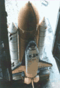
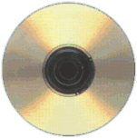
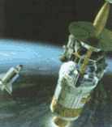
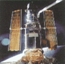

| |
|
1981
  ABD
uzay mekiði programýný baþlattý. Ýlk uzay mekiði
olan Columbia 12 Nisan 1981'de ilk yolculuðuna çýktý.
Columbia aslýnda ilk mekik deðildi. Uzay yolu adlý
bilimkurgu dizisine atfen 1977 yýlýnda yapýlan deneme
mekiði, Enterprise olarak adlandýrýlmýþtý; ama bu
mekik uzaya hiç çýkamadý. ABD
uzay mekiði programýný baþlattý. Ýlk uzay mekiði
olan Columbia 12 Nisan 1981'de ilk yolculuðuna çýktý.
Columbia aslýnda ilk mekik deðildi. Uzay yolu adlý
bilimkurgu dizisine atfen 1977 yýlýnda yapýlan deneme
mekiði, Enterprise olarak adlandýrýlmýþtý; ama bu
mekik uzaya hiç çýkamadý.
|
| 1984
Apple
firmasý ilk Macintosh bilgisayarlarý piyasaya sürdü.
Bu makineler, her þeyin grafik olarak çözümlenmesinden
dolayý biliþimle kolay uygulanabilirliðin baðrlaþtýrýlabileceðini
kanýtladý. Kullanýlan küçük ikonlar yardýmýyla
istediði iþlemi yapabilen kullanýcýlar, ekran üzerindeki
imleci, üzerinde küçük bir düðme bulunan
"fare" yardýmýyla ikonlara ulaþabiliyorlardý.
1988 yýlýndan itibaren IBM marka bilgisayarlar da benzer
bir iþletim sistemi olan Windows ve Presentation Manager
gibi programlarla donatýldý.
|
| 1987  Phjlips
firmasý ilk kompakt diski (CD) tanýttý. Aslýnda 1979 yýlýndan
beri var olan diskler, baþlangýçta yalnýzca müzik ve
diðer sesler için tasarlanmýþtý. Günümüzdeyse
CD'ler bilgisayar oyunlarý, filmler, müzik albümleri ya
da bilgisayar programlarý gibi birçok deðiþik amaç için
kulanýlmaktalar.
|
| 1989
 Amerikan
uzay sondasý Galileo,
uzay mekiði Atlantis tarafýndan Jüpiter'i incelemek üzere
uzaya gönderildi.
|
|
| 1983
Bagýþýklýk
yetersizliðine yol açan AIDS (Acquired Imnune
Deficiency Syndrome) virüsü ilk olarak 1983'te Paris
Pasteur Enstitüsü'nde, 1984'te ABD'de belirlendi.
1986'da Batý Afrika'da HIV 2 adý verilen benzer bir
virus keþfedildi. |
| 1984
Üst kuarkýn
varlýðý deneysel olarak belirlendi. Üst kuark ön görülere
uygun olarak +2/3 elektrik yüküne sahiptir. Bu kuarkýn
eþi olan alt kuarkýn yüküyse -1/3'tür. ýn kütlesinin
30 ile 50 milyuar elektronvolt (GeV) arasýnda olduðu
tahmin edilmektedir. Böylece bu kuarkýn en büyük kütleye
sahip olan kuark anlaþýlmaktadýr. |
| 1985 Paul
Crutzen, Mario Molina ve Sherwood Rowlan ozon tabakasýnda
delik olduðunu ortaya koydu. Güneþten gelen zararlý
morötesi ýþýnlarý süzen ozon tabakasý, deodorant
yapýmýnda ve soðutma sistemlerinde de kullanýlan
kloroflorokarbon gazlarýnýn atmosfere karýþmasý yüzünden
en ince olduðu kuzey kutbu üzerinde delindi. |
| 1989
Montreal
Mc Gill Üniversitesi'nden
Peter Deutsch, interneti indekslemek için ARCHI adýnda
bir arþiv yarattý. Bu arþiv net üzerindeki FTP
sitelerini kapsýyordu. Bir süre sonra Tim Berners
internet üzerinde bilgiyi daha rahat daðýtma, kulanýcýlara
farklý yerlerde bulunan bir belgeden diðerine geçmede
büyük kolaylýklar saðlayan World Wide Web'i (WWW)
geliþtirdi. |
| 1990
 Hubble
Uzay Teleskopu uzaya gönderildi. Ýngiliz gökbilimci
Edwin Hubble'ýn adýný taþýyan bu dev teleskop, NASA
ve ESA'nýn ortak projesi olarak yürütülmüþtü.
Teleskopun 15 milyar ýþýk yýlý öteyi gözlemleyebilmesi
hesaplanmýþtý.
|
|
|